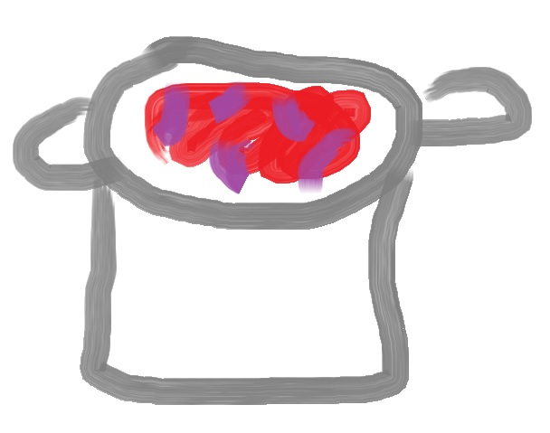

Moussasoup

This one-pot meal is decent.
Styled after moussaka, this one-pot meal has vaguely similar ingredients. However, the resemblance ends there.
Prep time: 10 minutes
Cook time: 30 minutes
Ingredients
- 1 tbsn olive oil
- 1 cup rice
- 250g mince (ground meat)
- 3 onions
- 3 tomatoes or 1 can of whole tomatoes
- 1 large eggplant
- paprika, garlic, parsley and salt to taste
Directions
- Chop the onions and heat the oil. Add salt and garlic. When the oil starts to sizzle, add the onions. Let them sizzle, stirring occasionally until they become slightly translucent.
- Add the mince and stir it up, to avoid clumps. Add more salt to the mince, but be careful not to oversalt the dish.
- Chop the tomatoes and add them once the meat browns. If using canned tomatoes, make sure you break them up with your mixing spoon.
- Crudely chop the eggplant and add it to the pot. Reduce the heat and cover, to let the eggplant release its water.
- After some minutes, the pot should be simmering nicely, with a large amount of liquid. If you think there isn't enough liquid in the pot, add some water and cover it again. Once it looks good, add the rice, paprika and parsely. Re-cover and let simmer for 5 minutes.
- Give the pot a stir, re-cover and turn the heat OFF. Let stand for 10 minutes before serving.
Serves six
Home